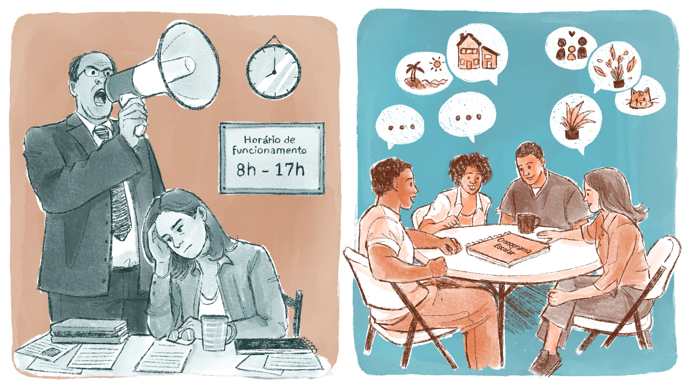

capítulo 1
O que é a Gestão Educacional em EPT?
Imagine: você é chamado em um concurso público e, agora, precisa trabalhar no contexto da Educação Profissional e Tecnológica (EPT). Além dos seus compromissos, muitas vezes você também passará a liderar um curso, um setor ou até mesmo a própria instituição. Possivelmente, surgirão várias questões desse trabalho que será gerir a EPT, tais como:
- O que é Administração?
- O que é Gestão?
- O que é Gestão Educacional?
- O que é Gestão Educacional na EPT?
- Que princípios da gestão da EPT são fundamentais?
A fim de responder essas questões, neste capítulo temos como objetivo conhecer a estrutura organizacional de uma instituição escolar por meio do estudo dos fundamentos e princípios da gestão educacional e da estrutura organizacional de uma instituição escolar. Para tal, vamos explorar o desafio da gestão da/na EPT e o trabalho pedagógico dos gestores, promovendo uma gestão de fato condizente com a EPT e para além dos aspectos apenas gerenciais e administrativos.
Novo paradigma da Gestão Educacional
Para falar sobre o conceito de Gestão, precisamos falar em Administração. Administrar corresponde, segundo(2014, p. 58), a “comandar e controlar, mediante uma visão objetiva de quem atua sobre a realidade, de maneira distanciada e objetiva”. É como administrar uma empresa, cumprindo metas e objetivos, sem muita preocupação com o todo e com os sujeitos dessa instituição. Assim, a administração configura-se como um processo racional, linear e fragmentado. Sendo um influir apenas de cima para baixo e de fora para dentro das unidades de ação, a administração corresponde ao emprego de pessoas e de recursos, de forma mecanicista e utilitarista, para que os objetivos institucionais sejam realizados e alcançados (Lück, 2014).
Por outro lado, superando o conceito de administração, o conceito de gestão resulta de um novo entendimento, uma vez que considera o todo em relação a suas partes e a relação delas entre si, de modo a promover maior efetividade do conjunto. É uma mudança de paradigma, ou seja, um novo modo de ver o mundo e perceber a realidade (Lück, 2014). Esse novo olhar também reverbera na gerência de instituições de ensino e, por isso, trataremos sobre a Gestão Educacional – que é nosso objetivo nesta unidade.

Título: Administração vs. Gestão
Elaboração: Prosa (2024b).
Como proposto por Vitor Henrique Paro (2015), uma atividade administrativa não pode ignorar a natureza do seu objeto, a disponibilidade de recursos e a forma como estes se apresentam, o local ou a instituição em que a ação se realiza e os objetivos que lhe são próprios. No caso da gestão educacional, o objeto é a escola e a educação é a sua finalidade; por isso, é necessário conhecer os temas relacionados e as múltiplas determinações que se manifestam na escola e nas relações que nela se estabelecem.
Compreender a gestão escolar como gestão da educação é um grande desafio e, na particularidade da política de EPT, torna-se necessário vê-la também enquanto política pública de Estado. A gestão educacional da EPT poderá ou não contribuir para efetivos espaços de construção e vivências de formações humanizadoras, críticas e autônomas tanto na vida estudantil e comunitária como no e para o mundo do trabalho.
Ao dizermos que um gestor da EPT poderá ou não contribuir com a construção de espaços efetivos de trocas, queremos destacar sua liberdade de escolha: ele, tanto em nível macro institucional quanto em nível de curso, por exemplo, tem a possibilidade de assumir uma gestão de caráter apenas gerencialista ou uma gestão efetivamente democrática. Em outras palavras, um gestor pode centrar seu trabalho apenas em torno de si mesmo ou construir conjuntamente com professores, estudantes e demais membros da comunidade escolar um trabalho que proponha e seja problematizado a partir dos desafios reais e contínuos.
Rosilda Maria Alves , em sua tese de doutorado intitulada “Práticas Gestionárias de Diretores na Educação Profissional: Entre o Gerencialismo e a Gestão Democrática” (2017), explora relações entre práticas gerencialistas, muito utilizadas em instituições públicas a partir de 1990, e práticas democráticas na EPT, defendidas pela legislação educacional vigente: constituição de 1988, LDB, PNE e lei de criação dos IFs.
.png)
Título: Gestão gerencialista vs. Gestão Democrática
Fonte: Alves (2017).
Elaboração: Prosa (2024c).
No modelo gerencialista, o governo exerce o controle estratégico instituindo indicadores de qualidade e adotando mecanismos de avaliação em atendimento a uma lógica de mercado. É um modelo regulador que foi reforçado pela implantação de avaliações em todos os níveis para cumprir metas e prestar contas a órgãos internacionais. Na maioria das vezes, neste tipo de gestão, a autonomia não é incentivada na construção do projeto educativo da escola (Alves, 2017).
Já no modelo de gestão democrática, a forma de gerir prioriza a participação, a transparência e a democracia, incluindo a coletividade dos sujeitos envolvidos. Essa forma de gestão busca continuamente a melhoria dos níveis de qualidade social, situando a educação e o trabalho (relações intrínsecas na EPT) como direitos fundamentais do ser humano. Ainda, há a intenção de construir um processo participativo para o desenvolvimento de um projeto que atenda aos estudantes e aos estudantes-trabalhadores dentro de suas comunidades (Alves, 2017).
Para conhecer mais sobre o modelo gerencialista e o de gestão democrática, ver: SILVA, Givanildo da; SILVA, Alex Vieira da; SANTOS, Inalda Maria dos. Concepções de gestão escolar pós–LDB: o gerencialismo e a gestão democrática. Retratos da Escola, Brasília, 2017.